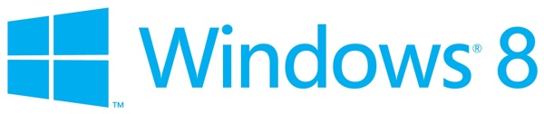
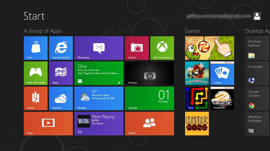
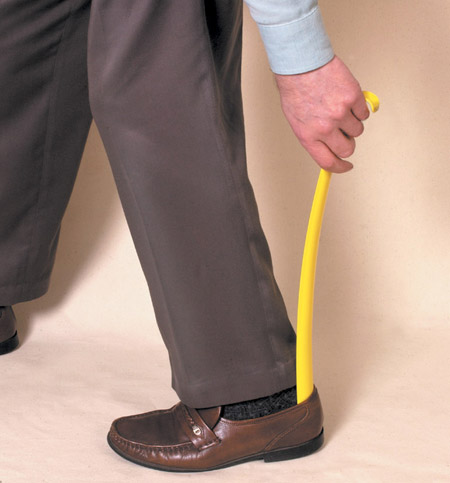

History Repeats Itself
2012/03/06
Back at mobile world congress, Microsoft announced the Consumer Preview of Windows 8. The download is available to everyone, so I decided to take it out for a spin. What follows isn’t simply thoughts on my time using Windows 8, but also where Windows is going. Buckle up; This is going to be a long ride.
For those that don’t know, Microsoft has been working on and previewing the next version of the Windows operating system for about a year now. While Apple and Google have decided to unify the OS across their phones and tablets, Microsoft has opted to unify their OS across tablets and desktops. Microsoft claims that the user interface is equally usable whether you are using touch, mouse, or keyboard. After sitting down with it for a few days I have some pretty strong feelings about Windows 8 with a keyboard and mouse. Is it usable? Yes. Is it a good idea? No, absolutely not, and I’ll explain why.
Way back in 2000, Microsoft started talking about tablets. While the devices that they previewed had many ideas we find antiquated today like a stylus and handwriting recognition, it introduced an idea that remains constant in Microsoft’s methodology today: tablets should be powerful enough to run a full desktop OS. In 2002, with the introduction of Windows XP, Microsoft doubled down on their promise to bring tablets to the masses. “This is a when, not an if, question. Don’t tell me you don’t believe in Tablet.” said Bill Gates. Admittedly, they weren’t wrong. With tablets like the iPad and Kindle Fire moving over 73 million units in 2011, the tablet generation is clearly here to say.
But besides being a decade early, Microsoft miscalculated on another front. Microsoft wanted a two for one deal. The mobile market is just now emerging, but that doesn’t mean it wasn’t there for the taking way back in the year 2000. Microsoft was right that tablets were the next big thing, but lost because they weren’t prepared to rethink the user interface paradigm. Just like graphical user interfaces and the mouse went hand in hand, mobile devices like tablets and smartphones require something far more touch friendly. Despite all of this, Microsoft spent years and years re-upping on their promise to no one. Windows XP, Windows Vista, and Windows 7 have all had ‘tablet editions’ with support for a stylus, handwriting, and virtually no change to the user interface compared to their desktop counterparts. Now with other companies like Google and Apple eating Windows’ proverbial lunch, they have been forced to action.
Enter Windows 8. Microsoft has completely redesigned the UI from the ground up, dubbing it’s new look ‘Metro’. It takes a ‘touch first’ type approach to user interaction. From what I can tell in videos and previews around the internet, this system works wonderfully on a tablet. I’ll be the first to admit that it looks very beautiful. Microsoft hasn’t been this savvy on design before. I’m a real proponent of the idea that in order to succeed in mobile, traditional design and interaction ideas simply won’t cut it. Even as a long time Mac and iOS user, I’m ecstatic to see serious competitors in the mobile/touch market.
But Microsoft is still going to miss the boat. It’s great that they are getting serious about touch interface and tablets, but Windows 8 completely forgets about the Desktop. Sure, finger driven interfaces are cool, hip, and arguably the future, but that’s because they work really great on small devices like tablets and phones! While touching your data is a delightful experience it is not always the most efficient. For almost 30 years we have been teaching ourselves how to use the mouse and keyboard as extremely powerful work tools. Often times when I want to do a complex task, or work through a problem very quickly, I will sit down at a desktop or laptop computer. On the same token for quick consumption of bite sized data, tablets and phones are a go-to technology. Both have their place, and both are paradigms that make sense.
That’s what get’s Microsoft in trouble. The two for one mentality. The idea that you can sit down and write a single piece of software to be run everywhere is convenient, but it isn’t practical. Windows 8 is great. Metro is great. But if the shoe doesn’t fit, don’t wear it. Windows 8 on the desktop feels shoehorned, through and through.